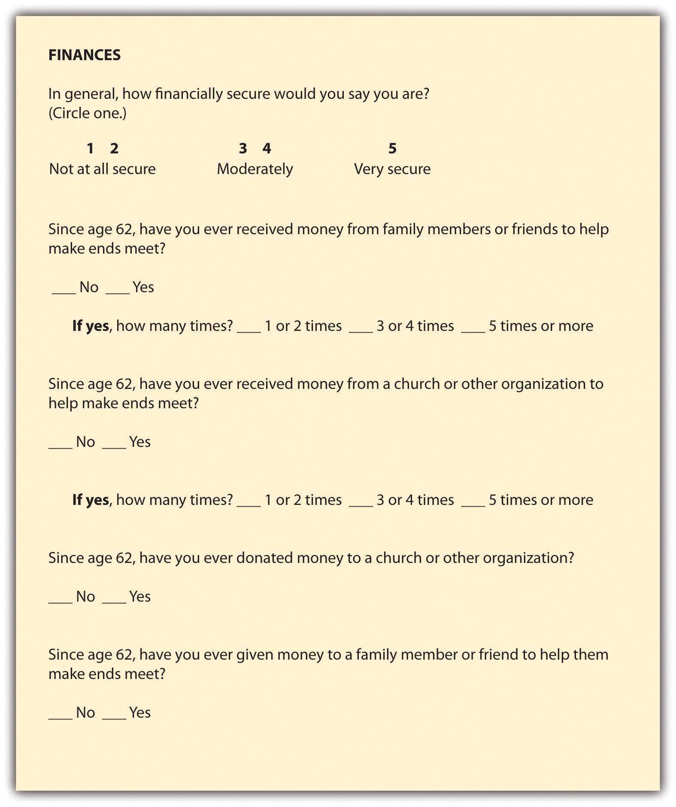

You should now have some idea about how conceptualization and operationalization work, and you also know a bit about how to assess the quality of your measures. But measurement is sometimes a complex process, and some concepts are more complex than others. Measuring a person’s political party affiliation, for example, is less complex than measuring her or his sense of alienation. In this section we’ll consider some of these complexities in measurement. First, we’ll take a look at the various levels of measurement that exist, and then we’ll consider a couple strategies for capturing the complexities of the concepts we wish to measure.
When social scientists measure concepts, they sometimes use the language of variables and attributes. A variableA grouping of several characteristics. refers to a grouping of several characteristics. AttributesThe characteristics that make up a variable. are those characteristics. A variable’s attributes determine its level of measurement. There are four possible levels of measurement; they are nominal, ordinal, interval, and ratio.
At the nominalLevel of measurement for which variable attributes meet the criteria of exhaustiveness and mutual exclusivity. level of measurement, variable attributes meet the criteria of exhaustiveness and mutual exclusivity. This is the most basic level of measurement. Relationship status, gender, race, political party affiliation, and religious affiliation are all examples of nominal-level variables. For example, to measure relationship status, we might ask respondents to tell us if they are currently partnered or single. These two attributes pretty much exhaust the possibilities for relationship status (i.e., everyone is always one or the other of these), and it is not possible for a person to simultaneous occupy more than one of these statuses (e.g., if you are single, you cannot also be partnered). Thus this measure of relationship status meets the criteria that nominal-level attributes must be exhaustive and mutually exclusive. One unique feature of nominal-level measures is that they cannot be mathematically quantified. We cannot say, for example, that being partnered has more or less quantifiable value than being single (note we’re not talking here about the economic impact of one’s relationship status—we’re talking only about relationship status on its own, not in relation to other variables).
Unlike nominal-level measures, attributes at the ordinalLevel of measurement for which variable attributes meet the criteria of exhaustiveness and mutual exclusivity and can also be rank ordered. level can be rank ordered, though we cannot calculate a mathematical distance between those attributes. We can simply say that one attribute of an ordinal-level variable is more or less than another attribute. Ordinal-level attributes are also exhaustive and mutually exclusive, as with nominal-level variables. Examples of ordinal-level measures include social class, degree of support for policy initiatives, television program rankings, and prejudice. Thus while we can say that one person’s support for some public policy may be more or less than his neighbor’s level of support, we cannot say exactly how much more or less.
At the intervalLevel of measurement for which variable attributes meet the criteria of exhaustiveness and mutual exclusivity and can be rank ordered, and the distance between attributes is known to be equal. level, measures meet all the criteria of the two preceding levels, plus the distance between attributes is known to be equal. IQ scores are interval level, as are temperatures. Interval-level variables are not particularly common in social science research, but their defining characteristic is that we can say how much more or less one attribute differs from another. We cannot, however, say with certainty what the ratio of one attribute is in comparison to another. For example, it would not make sense to say that 50 degrees is half as hot as 100 degrees.
Finally, at the ratioLevel of measurement for which variable attributes meet the criteria of exhaustiveness and mutual exclusivity and can be rank ordered, the distance between attributes is known to be equal, and attributes have a true zero point. level, attributes are mutually exclusive and exhaustive, attributes can be rank ordered, the distance between attributes is equal, and attributes have a true zero point. Thus with these variables, we can say what the ratio of one attribute is in comparison to another. Examples of ratio-level variables include age and years of education. We know, for example, that a person who is 12 years old is twice as old as someone who is 6 years old.
Earlier I mentioned that some concepts have dimensions. To account for a concept’s dimensions a researcher might rely on indexes, scales, or typologies. An indexA type of measure that contains several indicators and is used to summarize some more general concept. is a type of measure that contains several indicators and is used to summarize some more general concept. The Gallup poll on well-being described earlier in this chapter uses an index to measure well-being. Rather than ask respondents how well they think they are, Gallup has designed an index that includes multiple indicators of the more general concept of well-being (http://www.gallup.com/poll/123215/Gallup-Healthways-Index.aspx).
Like an index, a scaleA type of measure that contains several indicators that vary in intensity. is also a composite measure. But unlike indexes, scales are designed in a way that accounts for the possibility that different items on an index may vary in intensity. Take the Gallup well-being poll as an example and think about Gallup’s six dimensions of well-being: physical health, emotional health, work environment, life evaluation, healthy behaviors, and access to basic necessities. Is it possible that one of these dimensions is a more important contributor to overall well-being than the others? For example, it seems odd that a person who lacks access to basic necessities would rank equally in well-being to someone who has access to basic necessities but doesn’t regularly engage in healthy behaviors such as exercise. If we agree that this is the case, we may opt to give “access to basic necessities” greater weight in our overall measure of well-being than we give to “healthy behaviors,” and if we do so, we will have created a scale.
A typologyA way of categorizing concepts according to particular themes., on the other hand, is a way of categorizing concepts according to particular themes. For example, in his classic study of suicide, Emile Durkheim (1897)Durkheim, E. (1897 [2006 translation by R. Buss]). On suicide. London, UK: Penguin. identified four types of suicide including altruistic, egoistic, anomic, and fatalistic. Each of these types is linked to the concept of suicide, but the typology allows us to classify suicide in ways that make the concept more meaningful and that help simplify the complexities of the concept.
Let’s consider another example. Sexual harassment is a concept for which there exist indexes, scales, and typologies. One typology of harassment, used in the US legal system, includes two forms of harassment: quid pro quo and hostile work environment (Blackstone & McLaughlin, 2009).Blackstone, A., & McLaughlin, H. (2009). Sexual harassment. In J. O’Brien & E. L. Shapiro (Eds.), Encyclopedia of gender and society (pp. 762–766). Thousand Oaks, CA: Sage. Quid pro quo harassment refers to the sort where sexual demands are made, or threatened to become, a condition of or basis for employment. Hostile work environment harassment, on the other hand, refers to sexual conduct or materials in the workplace that unreasonably interfere with a person’s ability to perform her or his job. While both types are sexual harassment, the typology helps us better understand the forms that sexual harassment can take and, in turn, helps us as researchers better identify what it is that we are observing and measuring when we study workplace harassment.
Sexual harassment is a concept for which there are also indexes. A sexual harassment index would use multiple items to measure the singular concept of sexual harassment. For example, you might ask research participants if they have ever experienced any of the following in the workplace: offensive sexual joking, exposure to offensive materials, unwanted touching, sexual threats, or sexual assault. These five indicators all have something to do with workplace sexual harassment. On their own, some of the more benign indicators, such as joking, might not be considered harassment (unless severe or pervasive), but collectively, the experience of these behaviors might add up to an overall experience of sexual harassment. The index allows the researcher in this case to better understand what shape a respondent’s harassment experience takes. If the researcher had only asked whether a respondent had ever experienced sexual harassment at work, she wouldn’t know what sorts of behaviors actually made up that respondent’s experience. Further, if the researcher decides to rank order the various behaviors that make up sexual harassment, perhaps weighting sexual assault more heavily than joking, then she will have created a scale rather than an index.
Let’s take a look at one more specific example of an index. In a recent study that I conducted of older workers, I wanted to understand how a worker’s sense of financial security might shape whether they leave or stay in positions where they feel underappreciated or harassed. Rather than ask a single question, I created an index to measure financial security. That index can be found in Figure 6.12 "Example of an Index Measuring Financial Security". On their own, none of the questions in the index is likely to provide as accurate a representation of financial security as the collection of all the questions together.
Figure 6.12 Example of an Index Measuring Financial Security
In sum, indexes and typologies are tools that researchers use to condense large amounts of information, to simplify complex concepts, and most generally, to make sense of the concepts that they study.